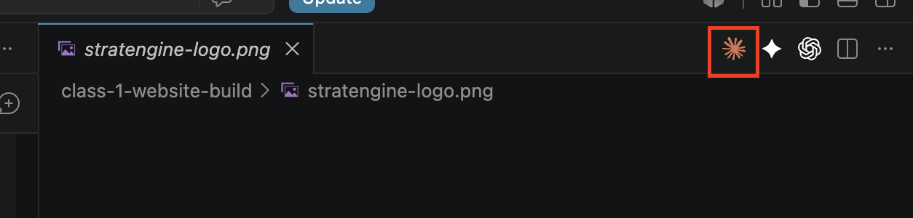
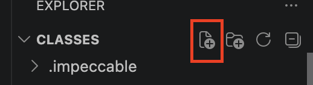

Do this once, ahead of time — so class time is building, not installing.
Before we start
A little honesty up front
Yes, this part is a drag. You only do it once.
Installing all this stuff isn't the fun part. It takes a while, a few things will look confusing, and none of it feels like "building a website" yet. That's normal — setup always feels like this.
Get through this once, and you never touch it again.
Everything below is a one-time setup for your computer. After today, you open VS Code and go straight to building — no installing, no accounts, no drag. So take a breath, follow along, and let Claude do the heavy lifting.
☕
Set aside about an hour, unhurried. Nothing here is hard — it's just a bunch of small steps. Stuck on any of them? That's what the last slide (and Claude) are for.
1 / Overview
What you're setting up
Four free tools, installed and logged in.
The four tools
VS Code — where the files for your website live on your computer.
Claude Code — the AI that edits those files for you.
GitHub — the backup + history of every change.
Vercel — turns your files into a live website on the internet.
You talk
→
Claude edits
→
GitHub saves
→
Vercel publishes
3 / VS Code + Claude Code
Your workspace
VS Code is just a really fancy file manager.
"You will never type code. You will type English."
Install VS Code (free, from code.visualstudio.com).
Install the Claude Code extension from the VS Code extension marketplace.
File → Open Folder → "New Folder" — create a brand new folder for your project, then open it. (The #1 stuck-point.)
3.1 / Sign in
Before you can type a single prompt
Open Claude Code and sign in.
Find the Claude Code icon — the orange starburst in the top-right toolbar of VS Code (near the split-screen and "…" icons). Click it to open the panel.
Click Sign in — a browser window opens. Log into your Claude account and approve, then come back to VS Code.
You're connected when the panel shows a prompt box waiting for you — not a sign-in button.
💳 Needs a paid Claude plan (Pro or Max) — the free account won't work. Subscribe at claude.ai first.

Look for this orange starburst in the top-right toolbar.

Don't see the icon? In the file list on the left, click New File (this button) — or press ⌘N (Mac) / Ctrl+N (Windows) — and make any file. The toolbar icons appear once a file is open.
⚡
Once you're in, switch the model to Opus — the strongest model for coding. Type /model and pick Opus, or use the model picker at the bottom of the panel.
Mentality
The one shift that makes this click
Stop using a tool. Start delegating to a person.
You're not learning a program. You're describing what you want to someone who'll go build it.
The old habit
Type keywords and scroll the results.
Point and click every step yourself.
Ask "how do I do X?" and go do it.
Learn the app before you can use it.
Talking to Claude
Say in plain English what you want.
Describe the goal — let Claude handle the steps.
Say "do X for me" — and it does it.
No app to learn. You already know how to talk.
This is the habit for the whole setup below: when something looks confusing, you don't go hunting — you describe what you see to Claude and let it handle it.
3.2 / Prerequisites
Let Claude do the whole setup
One prompt installs everything.
Claude installs every tool you need in one shot. Paste this into Claude (Mac or Windows, same prompt):
Set up everything I need to build and deploy a website: git, Node.js (npm and npx must work), the GitHub CLI, the Vercel CLI, and the Claude Code CLI (@anthropic-ai/claude-code) — plus whatever those need on my OS. On a Mac: install the Xcode Command Line Tools and, if Homebrew isn't already installed, install it first by running the official installer — and PAUSE so I can type my Mac password when it asks. On Windows: install with winget, but if winget itself is missing, install the App Installer / winget first; install Git for Windows (Claude Code uses it to run terminal commands as Bash); and install the Vercel CLI with npm after Node — it isn't a winget package. Finally, once Node is working, install Impeccable globally from impeccable.style using npx — if it asks "project or global?", choose global. Install anything missing, one at a time, then show me a checklist proving each one works.
What Claude will install
Homebrew (Mac) — the installer everything else is set up through.
git — the change-tracker GitHub is built on.
Node.js (includes npm + npx) — the engine the Vercel and Impeccable tools run on.
GitHub CLI + Vercel CLI — how Claude talks to your accounts.
Claude Code CLI — required before you can create agents (next section).
Impeccable — the design tool that makes your site look professional (installed globally, ready for class).
All free and standard — safe to say yes to each.
Your only job
Type your Mac password when it asks — this is the one thing Claude can't do for you. The screen stays blank as you type (no dots, no stars) — that's normal. Type it and hit Enter.
Scrolling terminal text = an install working, not an error. You never need to read it — Claude does.
Answer when Claude asks — say yes, and let it run. Downloads take 10–20 minutes.
If something fails, paste the error back: "this failed — fix it and continue."
3.2 / What GitHub is
Backup + history
GitHub: like Google Drive or Dropbox, but for code.
A cloud backup of your whole project, with a full history of every change.
You do not need to learn git commands. Claude handles the saving and uploading.
It's also what Vercel watches — every change you send up can trigger a fresh publish of your site.
3.2 / What Vercel is
Your website's home on the internet
Vercel: free hosting that auto-deploys when you push.
It takes your files and turns them into a live website anyone can visit.
You'll get a dashboard — this is where every site you build lives.
Hobby plan = free forever for personal projects like this.
Every change you send to GitHub → Vercel rebuilds automatically. No buttons to click.
3.2 / Create your accounts
Before Claude can log you in, the accounts have to exist
Sign up for GitHub and Vercel — two free accounts.
The next step logs Claude into these for you. But you have to have the accounts first. Both are free, and it's two quick sign-ups:
GitHub — sign up at github.com. Pick a username you'd put on a resume; you'll see it forever.
Vercel — sign up at vercel.com using the "Continue with GitHub" button. One click, no separate password — and it links the two accounts automatically.
💡
We go deeper on how you'll actually use GitHub and Vercel in class. For now, you just need the accounts created so the login step has something to sign into.
3.3 / Log into your CLIs
Installed ≠ logged in
Log Claude into GitHub, Vercel, and itself.
The tools are installed, but they don't know who you are yet. One prompt logs you into all three — Claude drives it and pauses when a browser window needs a click.
Log me into the GitHub CLI, the Vercel CLI, and the Claude Code CLI — one at a time. For each, walk me through any browser sign-in or code you need me to approve, then confirm I'm logged in before moving to the next.
✋
Expect a browser window (or a short code) for each login — that's normal, not an error. Sign in, approve, and tell Claude you're done. This is where the GitHub and Vercel accounts you just made get used.
3.4 / Terminal check
After the installs and logins finish
Make sure your terminal itself works.
Claude runs everything through your computer's terminal. If its configuration is broken, things fail in confusing ways later — agents won't launch, commands won't be found. Verify it now, while there's nothing to break:
Open a fresh terminal session and check that my shell is healthy: it should start with no errors, and git, node, npm, npx, gh, and vercel should all run. If my PATH or my shell startup files (like .zshrc) have problems, fix them and tell me what you changed.
Quit and reopen VS Code first. Freshly installed tools only show up in fresh terminals — this alone fixes most problems.
"command not found" right after installing ≠ broken install. The terminal just hasn't reloaded. Restart VS Code, then ask Claude to check again.
Red text when the terminal opens? Don't read it — copy it and paste it to Claude: "my terminal shows this when it opens — fix it."
3.5 / Fewer approvals
One-time setup — works in every project after this
Stop clicking Approve for the safe stuff.
Claude asks your permission before running commands. That's a good safety feature — but it also asks about harmless things constantly (listing files, installing packages, saving checkpoints), and the clicking slows you down. This pre-approves only the safe, everyday commands we use in class:
Grab the permissions kit from https://github.com/esl417/class-materials (the files in claude-permissions-kit), then read PERMISSIONS_SETUP_FOR_CLAUDE.md and do what it says for me. Install it globally — in my ~/.claude/settings.json, not this project's settings — so it works in every project. I'm not technical — handle it yourself and tell me when it's done.
Risky things still ask — deleting files, publishing to the internet, deploying. That's on purpose: those prompts are your safety net.
Takes effect in new sessions — if nothing seems to change, restart Claude Code once.
4 / Agents
Specialist Claudes
Creating agents inside Claude Code.
An agent is just a specialist Claude calls when needed. Now we'll install two: code-reviewersecurity-reviewer
You don't build these by hand. Each one is a ready-made message — you paste it into Claude, and Claude creates the agent for you.
Paste it into the Claude chat and press enter. The message already tells Claude to create the agent and install it globally.
Let Claude finish. It writes the agent into your global ~/.claude/agents/ folder, so it works in every project.
Do the same for the second agent.
To check both landed, ask Claude: list my global agents
Claude Code used to have a menu for this. Now it's simpler: you just ask Claude, and it builds the agent for you.
4.6 / Lock the review habit
Teach Claude your standards
Make code-review and security-review automatic.
Update your global CLAUDE.md so Claude always runs both reviews after code changes — no need to remember.
Ask Claude: Open my global CLAUDE.md and add a rule that you always run the code-reviewer and security-reviewer agents after making code changes.
You just gave Claude a permanent instruction. This is how you train it to your standards.
5 / CLAUDE.md
Permanent instructions
What CLAUDE.md is and how it works.
A plain markdown file Claude reads automatically every time it starts. Permanent instructions you don't have to repeat.
When making a decision, you need to decide where the direction belongs: global or project.
Note: these live in a .claude folder that's hidden by default — let Claude open them for you rather than hunting for the files.
5 / CLAUDE.md — where it lives
Permanent instructions
Global or project?
Global
~/.claude/CLAUDE.md
Applies to every project on your computer.
"Always run code-review after changes." "Be concise." Style preferences.
Project
./CLAUDE.md in repo root
Applies only to this website.
"This is a wedding photographer site." "Brand colors are X." "About page copy is locked."
Rule of thumb: same for every AI session → global. About this website → project.
To view or edit: just ask Claude — "open my global CLAUDE.md" or "open the project CLAUDE.md."
6 / You're all set
That's everything — see you in class
You're done. Here's what you set up.
VS Code + Claude Code, signed in and on Opus.
All the tools installed and logged in (git, Node, gh, vercel, claude).
Two review agents and a global CLAUDE.md rule.
GitHub + Vercel accounts, created and logged in — we wire them to your project in class.
🚀
Bring your laptop to class with your project folder open in VS Code. We'll go straight to building and shipping your site — no setup time lost.
7 / If something breaks
There's almost nothing you can't get past
Stuck? Tell Claude. It's the troubleshooter.
This is the habit for everything going forward: when something doesn't work, you don't go hunting for the fix — you describe what happened to Claude, and it diagnoses and fixes it. Paste the error, or just say what you see:
That didn't work — here's what happened: [paste the message, or describe what you see on screen]. What's going on, and can you fix it?
Claude reads the error, knows the usual causes, and walks you through it — the same way it ran the setup. It can almost always get you unstuck.
✉️
Still stuck after asking Claude a couple of times? Don't lose your evening over it — email me at eric@stratengineai.com and I'll walk you through it.